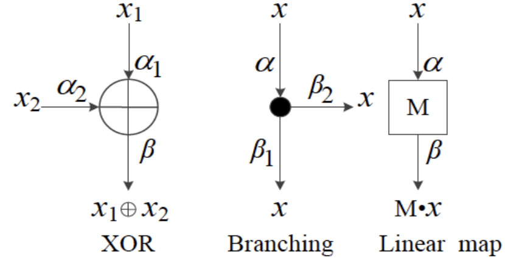

线性分析¶
来源：
密码分析学 / notes/04-线性分析/线性分析.md
核心问题¶
寻找明文、中间状态、密文和密钥比特之间有偏差的线性关系。若这种关系成立的概率明显偏离 \(1/2\)，就可以利用已知明密文对进行区分或密钥恢复。这里的“线性”指所选比特的异或关系。
线性逼近、掩码与偏差¶
对比特向量 \(a\) 和 \(x\)，定义二元域上的内积 \(a\cdot x=\bigoplus_i a_i x_i\)。掩码中为 \(1\) 的位置表示选取相应比特参与异或。例如，\(a=(1,0,1)\) 时，\(a\cdot x=x_1\oplus x_3\)。
设 \(F:\mathbb F_2^m\to\mathbb F_2^n\)，输入掩码为 \(\alpha\in\mathbb F_2^m\)，输出掩码为 \(\beta\in\mathbb F_2^n\)。研究的线性近似为
令 \(p_{\alpha,\beta}=\Pr_x[\alpha\cdot x\oplus\beta\cdot F(x)=0]\)，其中 \(x\) 均匀取值。带符号偏差为 \(\varepsilon_{\alpha,\beta}=p_{\alpha,\beta}-1/2\)；衡量可利用程度时看 \(|\varepsilon_{\alpha,\beta}|\)。正偏差表示等式更常成立，负偏差表示更常不成立。
例如概率 \(p=3/8\)，偏差是 \(3/8-1/2=-1/8\)。负偏差表示“等式为零”出现得比一半少。用相关度表示同一性质时，
本例的 \(c=-1/4\)；\(\lvert\varepsilon\rvert\) 越大，观察值越容易与随机时的 \(1/2\) 区分。
线性近似表（线性分布表，LAT）¶
对 S 盒 \(S:\mathbb F_2^m\to\mathbb F_2^n\)，先数使近似式为 \(0\) 的输入个数：
定义LAT
手算一项 LAT：先列输入，再数等式为零的次数¶
考虑如下 3 比特 S 盒，输入、输出按二进制三位表示：
| \(x\) | \(000\) | \(001\) | \(010\) | \(011\) | \(100\) | \(101\) | \(110\) | \(111\) |
|---|---|---|---|---|---|---|---|---|
| \(S(x)\) | \(000\) | \(001\) | \(011\) | \(110\) | \(111\) | \(100\) | \(101\) | \(010\) |
取输入掩码 \(\alpha=001\)、输出掩码 \(\beta=001\)。这两个掩码分别选取 \(x\) 和 \(S(x)\) 的最低位；将八个输入依次代入：
| \(x\) | \(S(x)\) | \(\alpha\cdot x\) | \(\beta\cdot S(x)\) | 两者异或 |
|---|---|---|---|---|
| \(000\) | \(000\) | 0 | 0 | 0 |
| \(001\) | \(001\) | 1 | 1 | 0 |
| \(010\) | \(011\) | 0 | 1 | 1 |
| \(011\) | \(110\) | 1 | 0 | 1 |
| \(100\) | \(111\) | 0 | 1 | 1 |
| \(101\) | \(100\) | 1 | 0 | 1 |
| \(110\) | \(101\) | 0 | 1 | 1 |
| \(111\) | \(010\) | 1 | 0 | 1 |
为零的输入有 2 个，因此 \(N_S(001,001)=2\)。这个 S 盒有 \(2^3=8\) 个输入，于是
表项 \(-2\) 是减去一半输入数后的计数。负号表示“异或等于零”较少，这条近似的绝对偏差仍大于零。
构造整张表： 枚举每个输入掩码 \(\alpha\) 和输出掩码 \(\beta\)，对每个掩码对遍历 \(2^m\) 个输入并累计 \(N_S\)。不同教材也可能把 \(N_S\) 或 \(2N_S-2^m\) 称作表项，使用公式前先确认采用哪一种定义；本笔记使用 \(N_S-2^{m-1}\)。
为什么双射 S 盒的 LAT 元素是偶数？
这个结论需要 \(S:\mathbb F_2^m\to\mathbb F_2^m\) 为双射且 \(m\ge 2\)。
记 \(f(x)=\alpha\cdot x\oplus\beta\cdot S(x)\)。 LAT的每一项就是\(N_s(\alpha,\beta)-2^{m-1}\)，那他的奇偶性就取决于\(N_s(\alpha,\beta)\)的奇偶性，而它就是\(f(x)=0\)的x的个数，那这个个数很难判断，不过我们不需要知道他具体的个数，只要判定奇偶性，那我们知\(f(x)\)一共有\(2^m\)个，要么是0，要么是1，我们知道异或一个很好的性质就是可以检测里面1的个数的奇偶性，奇数个就是1，偶数个就是0
所以说这里的trick就是把所有\(f(x)\)异或起来
注意这里利用一个性质\(\bigoplus_{x} x = 0\) 因为总共有偶数个1 当 \(\alpha\ne0\) 时，\(\alpha\cdot x\) 中\(x\)恰有 \(2^{m-1}\) 个 \(1\)；
由于 \(S\) 是双射，\(\beta\cdot S(x)\) 在 \(\beta\ne0\) 时也恰有 \(2^{m-1}\) 个 \(1\)，在 \(\beta=0\) 时有 \(0\) 个。 所以
所以式子右边为 \(0\)。 因此取值为 \(1\) 的输入数为偶数；总输入数 \(2^m\) 也是偶数，于是 \(N_S(\alpha,\beta)\) 为偶数。再减去同样为偶数的 \(2^{m-1}\)，就得到 \(\operatorname{LAT}_S(\alpha,\beta)\) 为偶数。
如果 \(S\) 不是双射，LAT 元素就有可能是奇数。
多轮线性掩码如何传播¶
从一个 S 盒的 LAT 中选取有偏差的输入、输出掩码，再让相邻轮的掩码相容，便得到一条线性路径。
- 线性层： 若 \(y=Lx\)，则 \(\beta\cdot y=(L^{\mathsf T}\beta)\cdot x\)，因此输出掩码 \(\beta\) 对应的输入掩码是 \(L^{\mathsf T}\beta\)。这一关系精确成立。
- 轮密钥异或： 若 \(y=x\oplus k\)，则 \(\beta\cdot y=\beta\cdot x\oplus\beta\cdot k\)。密钥贡献一个固定的奇偶项，不改变偏差的绝对值。
- S 盒： 选择非平凡且 \(\operatorname{LAT}_S(\alpha,\beta)\ne0\) 的掩码对；\((\alpha,\beta)=(0,0)\) 虽有最大表值，却不给出可利用的关系。其余掩码对的偏差决定这一步的统计强度。经过多个 S 盒和轮后，要把中间状态的掩码配对，使它们在异或相加时抵消。

图中的局部规则可用内积直接检查：若 \(y=x_1\oplus x_2\)，输出掩码为 \(\beta\)，两个输入分支都承接 \(\beta\)；若把 \(x\) 复制为两个分支，它们的输出掩码分别为 \(\beta_1,\beta_2\)，输入掩码就是 \(\beta_1\oplus\beta_2\)。这些是精确的线性关系，统计偏差只来自 S 盒等非线性部分。
线性层反向传播例子¶
设 \(y_2=x_2\oplus x_0,\ y_1=x_1,\ y_0=x_0\)，输出掩码为 \((1,1,0)\)。把它选中的输出位展开：
因此输入掩码是 \((1,1,1)\)。这里的反向传播是对掩码反向推导，不是对数据进行解密；直接展开奇偶式即可检查结果。
线性路线、线性包和密钥项¶
多轮路线通过匹配相邻部件的掩码，让中间状态项在异或时消去，得到明文、密文以及密钥的关系。对相同首尾掩码，可能有多条中间路线；这些路线共同形成线性包。完整近似的相关度由各路线及密钥共同决定；实际分析常选取高偏差路线估计其主要贡献。
轮密钥异或本身就会在线性关系中引入固定的密钥奇偶项，例如 \(y=x\oplus k\) 时，\(\beta\cdot y=\beta\cdot x\oplus\beta\cdot k\)。这与是否额外扩展一轮无关；扩展一轮猜末轮密钥则是为了通过密文得到近似式所需的内部状态。对固定密钥，异或一个固定的密钥比特会改变等式为零时偏差的符号，但不改变其绝对值。
堆积引理¶
设 \(X_1,\ldots,X_s\) 是相互独立的二值随机变量，\(p_i=\Pr(X_i=0)\)，带符号偏差为 \(\varepsilon_i=p_i-1/2\)。则
两个误差的例子¶
若 \(\varepsilon_1=1/4\)、\(\varepsilon_2=-1/8\)，则它们异或后的偏差为
也可以先计算相关度：\(c_i=2\varepsilon_i\)，独立时异或后的相关度为 \(c_1c_2\)，再除以 2 得到偏差。必须保留符号；概率最后仍是 \(0\) 到 \(1\) 之间的数。
从区分到密钥恢复¶
Matsui 算法 1¶
 我们就考虑一轮的线性近似式
我们就考虑一轮的线性近似式
但是中间状态我们不知道，我们拿到的是一组明密文，所以需要消除掉中间状态
那么代入就得到
如果这个等式以概率p成立 那我们可以用极大似然法来得到一个密钥比特线性组合的信息 设对 \(N\) 组已知明密文对，先初始化一个计数器\(T_0 = 0\) 对于每个密文，都计算
如果\(b_i=0,T_0++\)
若 \(p>\frac{1}{2}\)，线性近似式倾向于成立 如果\(T_0>N/2\) ，那么猜测\(\alpha \cdot k_0 \oplus \beta \cdot k_1 =0\) 如果\(T_0<N/2\)，则猜测为1；相等时无法据此区分。
这里实际上T0应该是在pN附近，不过为了方便我们直接用\(\frac{1}{2}\)做判定条件就行了，因为肯定是一个大于1/2，一个小于1/2，不然的话你要判断离pN和(1-p)N哪个更近，这就太麻烦了
若 \(p<\frac{1}{2}\)，线性近似式倾向于不成立
如果\(T_0>N/2\)，则猜测为1；相等时无法据此区分。
统一记法：令 \(\varepsilon=p-1/2\)，当 \((T_0-N/2)\varepsilon>0\) 时猜测该密钥奇偶值为0，小于0时猜测为1。
用数字看正、负偏差的判定方向¶
设 \(N=1000\)，观察到左侧为零的次数 \(T_0=430<500\)。
- 若近似概率 \(p=3/8\)，即偏差为 \(-1/8\)：密钥奇偶值为 0 时，左侧等于 0 的概率是 \(3/8\)；为 1 时，左侧等于 0 的概率是 \(5/8\)。观察频率小于一半，因此猜 密钥奇偶值为 0。
- 若近似概率改为 \(p=5/8\)，即偏差为 \(+1/8\)：密钥奇偶值为 0 时左侧为零的概率是 \(5/8\)，为 1 时是 \(3/8\)。相同的 \(T_0=430\) 此时应猜 密钥奇偶值为 1。
根据计数作出最可能的统计猜测，得到密钥的一位异或组合，例如 \(k_0[1]\oplus k_1[3]\)。继续结合其他近似式可求解更多密钥信息。

算法 1 的成功率怎样计算？¶
假设 \(N\) 组样本独立，线性近似的带符号偏差为 \(\varepsilon\)，令 \(p_+=1/2+|\varepsilon|\)。把统计方向调整到正确一侧：当正确密钥奇偶值对应事件的概率为 \(p_+\) 时，计数 \(T\) 满足
按 \(N/2\) 作门限，超过门限就判对；若恰好相等，则随机猜测，按一半成功计算。因此偶数 \(N\) 时精确成功率为
这不是无论偏差正负都机械地“计数大于一半猜 0”：偏差为负时应先按上面的判定表反转方向。两种正确密钥奇偶值的计数分布互为镜像，所以按对应方向判断时成功率相同。
当 \(N\) 足够大，二项分布可用正态分布估算；令 \(\Phi\) 为标准正态分布的累积分布函数，忽略连续性修正时：
例子： 若 \(N=64\)、\(|\varepsilon|=1/8\)，则 \(p_+=5/8\)。按上面的二项式求和，成功率约为 \(97.85\%\)；按正态式估算，\(P_s\approx\Phi(2.066)\approx98.06\%\)。增加数据可提高成功率，而固定成功率时所需数据量随 \(|\varepsilon|^{-2}\) 增长。
偏差与数据量¶
用 \(N\) 组明密文对估计一个近似式成立的频率，抽样波动通常是 \(O(N^{-1/2})\)。要辨认量级为 \(|\varepsilon|\) 的偏差，通常需要
这是固定区分成功率下的数量级估计；具体所需数据还受目标成功率、候选密钥数量以及近似模型影响。
Matsui 算法 2：猜测末轮子密钥¶
 通常情况下太长的轮数可能会导致偏差变小，我们可以拆成r+1轮，最后一轮爆破密钥，这样就可以得到少一轮的线性路线，这可能会有更大的偏差
假设我们得到一个路线
通常情况下太长的轮数可能会导致偏差变小，我们可以拆成r+1轮，最后一轮爆破密钥，这样就可以得到少一轮的线性路线，这可能会有更大的偏差
假设我们得到一个路线
以概率\(\frac{1}{2}+\frac{9}{32}\)成立，这个y需要我们猜测k3来恢复 已知N个明密文，\(d∙k_0⨁d∙k_1⨁d∙k_2\)未知，但取值确定
用\(T_0^i\)记录每一个猜测\(k_3^i\)，求解出的N个\(\alpha \cdot m \oplus \beta \cdot y = 0\)的个数
如果\(k_3^i\)是正确的, \(T_0^i取值趋近(1/2+9/32) N或(1/2−9/32)N\)，如果\(\gamma \cdot k= 0\),那就是前者，否则就是后者
\(k_3\) 猜错时得到错误的中间状态 \(y^i\)；常用的错误密钥随机化模型把对应计数近似看作集中在 \(N/2\) 附近。
 我们统计所有候选 \(k_3^i\) 对应的 \(T_0^i\)。正确候选的期望计数偏向 \((1/2+9/32)N\) 或 \((1/2-9/32)N\)，具体取哪一边由未知密钥奇偶值决定。按 \(|T_0^i-N/2|\) 给候选排序：偏离越大，越值得优先验证；正偏差下可由偏离方向推测密钥奇偶值，负偏差下方向相反。
我们统计所有候选 \(k_3^i\) 对应的 \(T_0^i\)。正确候选的期望计数偏向 \((1/2+9/32)N\) 或 \((1/2-9/32)N\)，具体取哪一边由未知密钥奇偶值决定。按 \(|T_0^i-N/2|\) 给候选排序：偏离越大，越值得优先验证；正偏差下可由偏离方向推测密钥奇偶值，负偏差下方向相反。
计数排序例子： \(N=1000\)，三个末轮候选的计数分别为 \(430,570,495\)，相对 \(500\) 的偏离量分别为 \(70,70,5\)。前两个候选并列领先，第三个靠后。接着用更多数据、其他线性近似或完整明密文验证区分前两个候选。
算法 2 的操作顺序¶
- 找一条到末轮之前的有效线性近似，确定它需要哪些内部状态位。
- 对每个相关末轮子密钥候选，部分解密密文，得到这些中间状态位。
- 把对应明文和恢复出的中间状态代入近似式，统计结果为零的次数 \(T_\kappa\)。
- 对候选按 \(|T_\kappa-N/2|\) 排序，优先验证偏离大的候选。
例如只用到一个末轮 S 盒输出的部分比特时，只需猜恢复这些比特必需的子密钥位，不必对每个样本枚举完整主密钥。候选能否可靠区分取决于偏差、样本量及错误密钥的实际统计分布。
两种算法都利用偏差：算法 1 直接推断密钥奇偶值；算法 2 将近似延伸到末轮之前，猜测末轮所需的部分子密钥并比较统计量。
相关笔记¶
参考资料¶
- Mitsuru Matsui, Linear Cryptanalysis Method for DES Cipher（EUROCRYPT 1993）
- Howard M. Heys, A Tutorial on Linear and Differential Cryptanalysis
- Tomer Ashur 与 Vincent Rijmen, On Linear Hulls and Trails
实验中的具体计算¶
实验三、四：线性分析与自动化建模 补充了实验 S 盒的负 LAT 表项、四轮迭代路线偏差 \(1/32\)、PHILOX 的掩码消元，以及六轮路线中整数化权重与精确相关度的区别，附原报告截图和可复现代码。